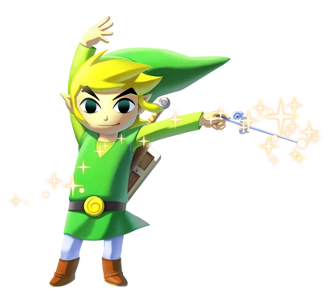
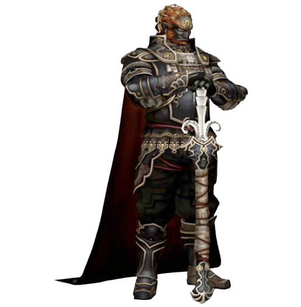
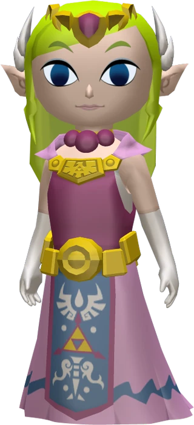

Personages
Link
is de hoofdfiguur uit de computerspelserie van The Legend of Zelda.
Hij kwam het eerst voor in het spel The Legend of Zelda uit 1986.
Het personage was toen nog een simpel tweedimensionaal personage, inmiddels is hij
driedimensionaal.
Hij komt ook voor in andere games, stripboeken en een tekenfilmserie.
Ganondorf

Ganondorf is een extreem krachtige Gerudo-tovenaar die zich binnen de serie tegen Link en Prinses Zelda verzet.
hij is een slechterik van puur kwaad.
en een wrede, meedogenloze krijgsheer wiens doel het is om het koninkrijk Hyrule in bezit te nemen.
Zelda
Princess Zelda is een personage uit de computerspelserie van The Legend of Zelda.
Ze is een lid uit Hyrule's koninklijke familie en speelt een belangrijke rol in de geschiedenis van Hyrule.
Alhoewel ze de titelrol speelt in de serie, bestuurt de speler enkel de held Link.
Gewoonlijk wordt Zelda in de meeste spellen gekidnapt en gevangengenomen door de kwaadaardige antagonist Ganondorf zodat Link haar moet bevrijden